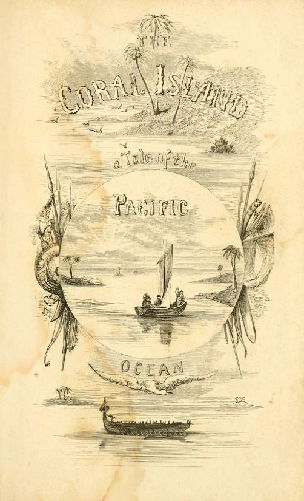
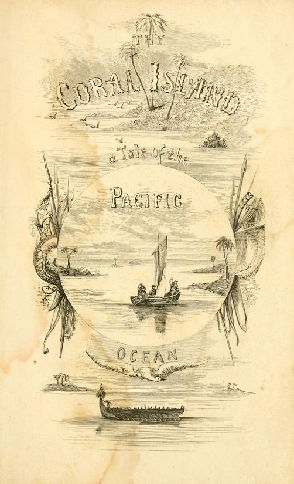

| MON | TUE | WED | THR | FRI | SAT | SUN |
|---|---|---|---|---|---|---|
| 1 | 2 | |||||
| 4 | 5 |
| | 9 | ||
| 11 | 12 | 13 | 14 | 15 | 16 | 17 |
| 18 | 19 | 20 | 21 | 22 | 23 | 24 |
| 25 | 26 | 27 | 28 | 29 | 30 |
You can check some of my old memories here. Click on the corals to see more.
April 3rd
—I went to the settlement, on the point of an islet thickly covered with tall cocoa-nut trees.
Captain Ross and Mr. Liesk live in a large barn-like house open at both ends, and lined with mats made of woven bark. The whole place had rather a desolate aspect, for there were no gardens to show the signs of care and cultivation.
The natives belong to different islands in the East Indian archipelago: we saw the inhabitants In colour they resemble the Tahitians, from whom they do not widely differ in features. Some of the women, however, show a good deal of the Chinese character. I liked both their general expressions and the sound of their voices. They appeared poor, and their houses were destitute of furniture; but it was evident, from the plumpness of the little children, that cocoa-nuts and turtle afford no bad sustenance.

April 6th
We arrived in view of the Keeling or Cocos Islands, situated in the Indian Ocean.
In every part one meets hermit crabs of more than one species, carrying on their backs the shells which they have stolen from the neighbouring beach.
Overhead, numerous gannets, frigate-birds, and terns, rest on the trees; and the wood, from the many nests and from the smell of the atmosphere, might be called a sea-rookery. The gannets, sitting on their rude nests, gaze at one with a stupid yet angry air.
Little imagination is required to fancy that so light and delicate a body must be tenanted by some wandering fairy spirit.
April 6th
Chamisso, the justly distinguished naturalist, stating that the inhabitants of the Radack archipelago, a group of lagoon-islands in the midst of the Pacific, obtained stones for sharpening their instruments by searching the roots of trees which are cast upon the beach.
It will be evident that this must have happened several times, since laws have been established that such stones belong to the chief, and a punishment is inflicted on anyone who attempts to steal them.
April 7th
Mr. Liesk tells me that the crab begins by tearing the husk, fibre by fibre, and always from that end under which the three eye-holes are situated; when this is completed, the crab commences hammering with its heavy claws on one of the eye-holes till an opening is made. Then turning around its body, by the aid of its posterior and narrow pair of pincers, it extracts the white albuminous substance.
April 8th
Today, by merely touching my face with one of the branches, pain was instantaneously caused because of the genus Millepora from the corals; it increased as usual after a few seconds, and remaining sharp for some minutes, was perceptible for half an hour afterwards. The sensation was as bad as that from a nettle, but more like that caused by the Physalia or Portuguese man-of-war. Little red spots were produced on the tender skin of the arm, which appeared as if they would have formed watery pustules, but did not.
April 10th
A few miles north of Keeling there is another small atoll, the lagoon of which is nearly filled up with coral-mud. Captain Ross found embedded in the conglomerate on the outer coast, a well-rounded fragment of greenstone, rather larger than a man's head: he and the men with him were so much surprised at this, that they brought it away and preserved it as a curiosity. The occurrence of this one stone, where every other particle of matter is calcareous, certainly is very puzzling. The island has scarcely ever been visited, nor is it probable that a ship had been wrecked there!
 
